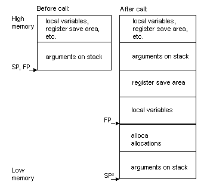

Reference
The Reference section
describes the SuperH RISC ABI and SuperH RISC-specific attributes of the
main GNUPro tools.
-
Compiler
-
SuperH RISC ABI Summary
-
Assembler
-
Linker
-
Debugger
Compiler
This section describes SuperH
RISC-specific features of the GNUPro Compiler.
SuperH RISC-specific command-line options
For a list of available generic
compiler options, refer to "GNU CC Command Options" in
Using GNU
CC in GNUPro Compiler Tools. In addition, the following SH-specific
command-line options are supported
:-m1
Generate SH1 code. (default)
-m4
Generate SH4 code, with FPSCR_PR == 1 at function entry.
-m4-single
Generate SH4 code, with FPSCR_PR == 0 at function entry.
Generate SH3E code, but with SH4 instruction cost heuristics,
code alignment and scheduling.
Uses the non-IEEE conformant floating point comparisons advocated
in the SH3E Floating Point Architecture. (default)
Adhere to IEEE arithmetic, even if it costs performance.
Target is big endian. (default)
Target is little endian.
Use long jump tables (this has been modified to use short jump
tables where the optimizer detects that a short table is sufficient)
Align doubles on 64-bit boundaries.
Add mac registers to call used registers.
Dump instruction size information.
Obsolete; for backward compatibility only.
Generate pseudo-ops for linker relaxation, and request it from
the linker.
Give code size consideration priority before speed.
Preprocessor symbols
The compiler supports the
following preprocessor symbols:
Is always defined:
Each of these preprocessor symbols is target dependant.
Attributes
See "Declaring Attributes
of Functions" and "Specifying Attributes of Variables" in "Extensions to
the C Language Family" in
Using GNU CC in GNUPro Compiler Tools
for more information.
New compiler and linker features
The GNUPro compiler and
linker have been improved by Cygnus to provide even more benefits for customers
developing for embedded targets. These features are guaranteed order of
initialization at startup, and selective linking.
Initialization prioritization
In C++, you can define static
and global objects with constructors, or initialize static and global variables
from a function. This means that the constructors or functions are run
before the rest of your program starts. However, when you have these objects
spread over multiple files, the C++ standard does not specify the order
in which they are initialized, and for all practical purposes the order
is random. For an embedded system, this can be a problem, as you may want
to ensure that a static scheduler object is initialized before static threads
can attach to it, or that devices are initialized before they are used.
GNUPro
solves this problem by allowing you to define a priority when the static
or global is declared. The following example shows the syntax:
static
object_t myobj __attribute__((init_priority (30000) ));
The syntax is slightly different
if the object takes any arguments to its constructor:
static
object_t myobj __attribute__((init_priority (30000) )) = \
object_t(arg1, arg2);
The numeric priority can be
from 1 to 65535, with 1 being the highest priority, and 65535 being the
lowest. The default priority for objects without this attribute is 65535.
Constructors with a higher priority are guaranteed execution before constructors
with lower priority.
In all cases, you must provide
the argument '
-finit-priority'
to the compiler on its command-line for it to recognize this attribute
when you are compiling your C++ source files.
If you are using eCos, be
warned that eCos uses initialization priorities internally. Ensure you
choose an appropriate priority level so that other eCos subsystems will
have initialized before you refer to them in your own constructor.
Selective linking
When writing C and C++ code,
it is sometimes natural to include more than one function in a source file.
For example in C++, it is common to have all methods for a particular class
contained in the same C++ source file. However, there is a drawback that,
conventionally, if you use just one of these functions, then all the functions
defined in that file also get included in the final executable image. For
an embedded system, this can substantially and unnecessarily increase the
size of the final image stored in ROM, or loaded into RAM when debugging.
The GNUPro C and C++ compilers
can now optionally remove these unnecessary functions from the final image.
They also ensure that any shared global data is removed that is only referenced
by functions that are removed. This can be done by including the options
'
-ffunction-sections'
and '
-fdata-sections'
on the command-line, when you invoke the C or C++ compiler.
The '-ffunction-sections'
option removes unnecessary functions, and the '-fdata-sections'
option removes unnecessary data.
In addition, when classes
define virtual methods in C++, it is possible to remove any unused methods
from the final image by passing the option '
-fvtable-gc'
to the C++ compiler on its command-line.
In all cases, you must also
supply a command-line option when linking. If invoking the linker ('
ld'
)
directly, use '
--gc-sections'
on its command-line; alternatively, if you are using the preferred method
of linking your executable, using the form:
'gcc -o
<program
name> <file1>.o <file2>.o'
then also pass the option '
-Wl,-
-gc-sections' on the compiler command-line, for example:
gcc
-o prog f1.o f2.o -Wl,--gc-sections
ABI
Summary
This section describes
the SuperH RISC ABI, which the SuperH RISC tools adhere to by default.
Data type sizes
and alignments
The following table shows
the size and alignment for all data types:
Alignment rules
The stack is aligned to a
four-byte boundary. One byte is used for characters (including structure/unions
made entirely of chars), two bytes for short (including structure/unions
made entirely of short / char) and four-byte alignment for everything else.
These values are modified
appropriately when the packed/aligned attributes are used.
Calling conventions
8-bit and 16-bit integer values
are promoted to the 32-bit integer type with the same (un)signedness.
More details are outlined
in Argument Passing and Function Return Values.
|
|
|
|
|
| Scratch |
r2-r3 |
|
|
|
|
|
|
Frame pointer, preserved
across calls |
|
Stack pointer, preserved
across calls |
|
Not preserved across calls |
|
Floating-point function
returns |
|
Floating-point function
arguments |
|
|
|
|
Register Allocation
This is the order in which
the compiler allocates registers
|
|
|
|
r1,r2,r3,r7,r6,r5,r4,r0,r8,r9,r10,r11,r12,r13,r14
|
|
|
fr1,fr2,fr3,fr4,fr5,fr6,fr7,fr0,fr8,fr9,fr10,fr11,fr12,fr13,fr14,fr15
|
The
Stack Frame
This section describes SuperH
RISC stack frame:
-
The stack grows downwards from high addresses
to low addresses.
-
A leaf function need not allocate a stack frame
if it does not need one.
-
A frame pointer need not be allocated.
-
The stack pointer shall always be aligned to
4-byte boundaries.
Stack frames for functions
that take a fixed number of arguments look like this:

*
If
no '
alloca'
region, the frame pointer (FP) points to the same location as SP.
Functions that take a variable
number of arguments use a local variable to store potential unnamed arguments
passed in registers.
Argument passing
The floating-point argument
passing registers are only used for floating point values. The integer
argument passing register is used for other values. If an argument fits
entirely in the remaining argument passing registers for its type, it is
passed in registers; else it is passed entirely on the stack.
When an argument is passed
entirely on the stack, this does not affect the registers available for
subsequent arguments - in this regard the sh4 and sh4-single targets differ
from all other SH targets so far.
Double precision and complex
double precision values are aligned to an even register when passed in
registers. If that requires skipping an argument passing register, that
register is not used for a subsequent argument. For little-endian targets,
the floating-point argument passing registers are used in the order '
fr5',
'
fr4', '
fr7',
'
fr6', '
fr9',
'
fr8', '
fr11',
'
fr10'; this
is necessary to get correct behaviour for varargs functions.
Function Return Values
Floating-point values are
returned in registers '
fr0'
through '
fr3':
scalar single precision in '
fr0',
scalar double precision and complex single precision in '
fr0'
and '
fr1',
and complex double precision in '
fr0',
'
fr1', '
fr2'
and '
fr3'.
Integer values and small structures that fit in size and alignment in an
integer value are returned in register '
r0'
if they fit in 32 bits, else in '
r0'
and '
r1'.
Assembler
This
section describes SuperH RISC-specific features of the GNUPro Assembler.
SuperH RISC-specific command-line options
For a list of available generic
assembler options, refer to "Command-Line Options" in
Using AS in
GNUPro
Utilities.
-little
The target is little-endian.
Use linker relaxation.
Syntax
For information about SuperH
RISC assembler, see
Hitachi Single-Chip RISC Microcomputers SH7700 Series
Programming Manual (Hitachi Micro Systems, Inc., August 1995).
Register
names
|
|
|
|
|
|
|
|
|
dr0,
dr2,
dr4,
dr6,
dr8,
dr10,
dr12,
dr14
|
Floating-point registers
addressed as doubles |
|
|
For communication between
general purpose and floating-point registers |
Floating point
Hardware floating-point is
supported for the SH3E and SH4 only.
Pseudo opcodes
Opcodes are represented in
the same character set that the compiler compiling gas uses. For the toolchains
we deliver, this is ASCII.
Synthetic instructions
Insert as many nops (and a leading single byte if necessary)
to archive the specified alignment.
Linker
eCos generates linker scripts
appropriate for the exact eCos configuration you have chosen. Instructions
on how to use this linker script are provided in the manual
Getting
Started with eCos.
SuperH RISC-specific command-line options
For a list of available generic
linker options, refer to "Linker scripts" in
Using LD in
GNUPro
Utilities. There are no SuperH RISC-specific command-line linker options.
Debugger
This section describes SH-specific
features of the GNUPro Debugger.
To connect to the target board
in GDB, using the command:
target
remote <devicename>
where '
<devicename>'
will be a serial device such as '
/dev/ttyS0'
(Unix) or '
com2'
(Windows NT). Then load the code onto the target board by typing '
load'.
After being downloaded, the program can be executed.
SuperH RISC-specific command-line options
For the available generic
debugger options, refer to
Debugging with GDB in
GNUPro Debugging
Tools. There are no SuperH RISC-specific debugger command-line options.
Debugging programs with multiple threads
Programs with multiple threads
can be debugged using either the graphic user interface to GDB, GDBTk or
the GDB command line interface. The following describes how to debug multiple
threads using the GDB command line.
In some operating systems,
such as eCos, a single program may have more than one thread of execution.
The precise semantics of threads differ from one operating system to another,
but in general the threads of a single program are akin to multiple processes,
except that they share one address space (that is, they can all examine
and modify the same variables). On the other hand, each thread has its
own registers and execution stack, and perhaps private memory.
GDB provides the following
functions for debugging multi-thread programs
-
'thread
threadno', a command to switch among threads
-
'info
threads', a command to inquire about existing threads
-
'thread
apply [threadno][all] args', a command to apply a command
to a list of threads
-
thread-specific breakpoints
The GDB thread-debugging facility
allows you to observe all threads while your program runs, but whenever
GDB takes control, one thread in particular is always the focus of debugging.
This thread is called the current thread. Debugging commands show program
information from the perspective of the current thread.
For debugging purposes, GDB
associates its own thread number, always a single integer, with each thread
in your program.
Display a summary of all threads currently in your program.
GDB displays for each thread (in the following order):
-
The thread number assigned by GDB
-
The target system's thread I.D.
-
The current stack frame summary for that thread
An asterisk '*'
to the left of the GDB thread number indicates the current thread. Use
the following example for clarity.
|
|
|
|
at
/eCos/packages/kernel/v1_1/tests/thread_gdb.c:91
|
Name:
controller, State: running, Priority: 0, More: <none>
|
1
thread 1 Cyg_HardwareThread::thread_entry (thread=0x1111aaa2)
|
at
/eCos/packages/kernel/v1_1/src/common/thread.cxx:68
|
Name:
Idle Thread, State: running, Priority: 31, More: <none>
|
thread
<threadno>
Make thread number '<threadno>'
the current thread. The command argument, '<threadno>',
is the internal GDB thread number, as shown in the first field of the 'info
threads' display. GDB responds by displaying the system identifier
of the thread you selected, and its current stack frame summary, as in
the following output.
|
|
|
|
#0
change_state (id=0, newstate=0 '\000')
|
at
/eCos/kernel/current/tests/bin_sem2.cxx:93
|
93
if (PHILO_LOOPS == state_changes++)
|
Current
language: auto; currently c++
|
|
thread
apply [<threadno>][<all>]
<args>
The thread apply command allows you to apply a command to one
or more threads. Specify the numbers of the threads that you want affected
with the command argument '<threadno>',
where '<threadno>'
is the internal GDB thread number, as shown in the first field of the 'info
threads' display. To apply a command to all threads, use
'thread apply all args'.
Whenever GDB stops your program,
due to a breakpoint or a signal, it automatically selects the thread where
that breakpoint or signal happened.
When your program has multiple
threads, you can choose whether to set breakpoints on all threads, or on
a particular thread.
break
<linespec>thread
<threadno>
If '
<linespec>'
specifies source lines, then there are several ways of writing them. Use
the qualifier '
thread <threadno>'
with a breakpoint command to specify that you only want GDB to stop the
program when a particular thread reaches this breakpoint.
'<threadno>'
is one of the numeric thread identifiers assigned by GDB, shown in the
first column of the 'info
threads' display.
If you do not specify '
thread
<threadno>'
when you set a breakpoint, the breakpoint applies to all threads of your
program.
You can use the thread qualifier
on conditional breakpoints as well; in this case, place '
thread
<threadno>'
before the breakpoint condition, as the following example shows.
(gdb)
break frik.c:13 thread 28 if bartab > lim
|
Whenever your program stops
under GDB for any reason, all threads of execution stop; not just the current
thread. This allows you to examine the overall state of the program, including
switching between threads, without worrying that things may change.
Conversely, whenever you restart
the program, all threads start executing. This is true even when single
stepping with commands like 'step'
or 'next'.
In particular, GDB cannot single-step all threads in lockstep. Since thread
scheduling is up to your debugging target's operating system (not controlled
by GDB), other threads may execute more than one statement while the current
thread completes a single step. In general other threads stop in the middle
of a statement, rather than at a clean statement boundary, when the program
stops.
You might even find your program
stopped in another thread after continuing or even single stepping. This
happens whenever some other thread runs into a breakpoint, a signal, or
an exception before the first thread completes whatever you requested.
SET SCHEDULER-LOCKING
For targets that support it,
GDB has a new command that helps to debug multi-threaded programs.
The '
set scheduler-locking
[on off step]' command allows the GDB user to exert some
control over how threads are scheduled while debugging.
Normally GDB does not attempt
to interfere with thread scheduling. This means that in the default mode
('
scheduler-locking off'),
the current thread may be scheduled out, and a different thread may begin
running, at any time (as determined by the native scheduler). For instance,
you may give a GDB command such as '
step'
or '
finish',
and when the command completes, you may be looking at a different thread.
If you set the scheduler-locking
mode to '
step',
then GDB will try to interfere with the native scheduler just enough to
prevent another thread from popping up while you debug. Other threads may
get to run sometimes, but whenever a command such as '
step'
or '
finish'
completes, you should be looking at the same thread that was running before
the command. Of course, if another thread gets to run and hits a breakpoint,
GDB will still switch you to that thread (so if you don't want that to
happen, then disable your breakpoints).
For even greater (and more
intrusive) control over the thread scheduler, GDB provides the mode '
scheduler-locking
on'. In this mode, the native scheduler is completely locked,
and no thread may run except the current one. Obviously this will radically
change the behavior of your program, and may lead to deadlock or other
unpleasant consequences, so use it with caution.
Syntax:
set
scheduler-locking [off on step]
Set mode for locking scheduler during
target execution.
No locking (threads may preempt
at any time).
Full locking (no thread except the
current thread may run).
The scheduler is
locked during every single-step operation. In this mode, no other thread
may run during a step command. However, other threads may run while stepping
over a function call ('
next').